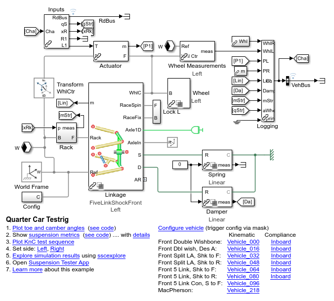
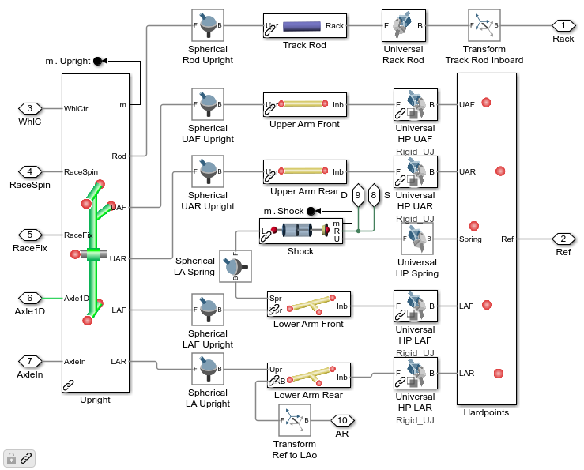
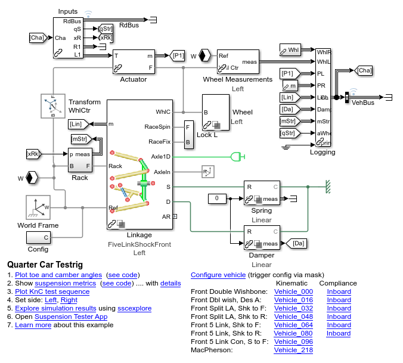
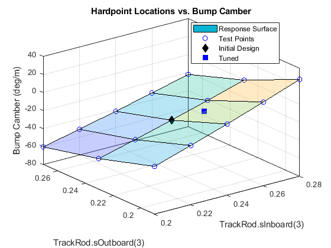

Tuning Suspension Hardpoints to Meet Target Performance Metrics
This example tunes suspension hardpoints to minimize the bump steer in a vehicle suspension. Using MATLAB scripts or an App you can specify the which hardpoints (such as outboard hardpoint on the upper wishbone) and which coordinates (such as along the x, y, or z axis) should be tuned.
First a sweep is performed to show the design space. If two coordinates are selected for tuning, a 2D plot will be shown, otherwise a table of the tested values and the resulting performance metric. Next, optimization algorithms are used to find the combination that comes closest to the target value of the selected performance metric.
The documentation below shows the steps performed on testrig_quarter_car.slx. They can also be performed on testrig_quarter_car_doublewishbone.slx and testrig_quarter_car_pullrod.slx.
Contents
Quarter-Car Testrig Model
The model testrig_quarter_car can be configured to test several different types of suspensions. The suspension type is selected based on field Vehicle.Chassis.SuspA1.Linkage.class.Value within a MATLAB data structure. The locations of the hardpoints are defined within that structure.
mdl = 'testrig_quarter_car'; open_system(mdl) sm_car_load_vehicle_data(mdl,'064'); sm_car_config_variants(mdl);
Suspension Model
This is the structure of the suspension. The entire suspension is parameterized based on hardpoints. Those hardpoints are defined based on [x y z] locations relative to a common reference point. In the default set of data provided, that reference point is on the ground at the point midway between where the left and right tires touch the ground.
open_system('testrig_quarter_car/Linkage/FiveLinkShockFront','force');
Define Sets of Values for Parameter Sweep
The portion of the design space that will be tested is defined by selecting hardpoint coordinates and a set of values for that coordinate. In this example, we vary the z-coordinate for both ends of the track rod in the steering system. MATLAB will test each combination of values for the two points and plot the result. Any number of coordinates can be used for the sweep, we limited it to two in the example so that we could plot the results as a surface.
% Settings parameters to be swept % path2Val is complete path to variable and index in parentheses par_list = []; par_list(1).path2Val = 'Vehicle.Chassis.SuspA1.Linkage.TrackRod.sInboard.Value(3)'; par_list(1).relRange = -0.04:0.02:0.04; % Relative range in m par_list(2).path2Val = 'Vehicle.Chassis.SuspA1.Linkage.TrackRod.sOutboard.Value(3)'; par_list(2).relRange = -0.04:0.04:0.04; % Relative range in m % Structure par_list must contain valueSet with values for parameter % initVal is required for two-parameter surface plot only for par_i = 1:length(par_list) par_list(par_i).initVal = eval(par_list(par_i).path2Val); par_list(par_i).valueSet = par_list(par_i).initVal + par_list(par_i).relRange; end % Set up Maneuver Maneuver = sm_car_maneuverdata_knc(0.1,-0.1,0.01,1.3,0.1,500,1200,1200,1200,1200,-0.3);
Conduct Parameter Sweep
This function will create a simulation input object where each entry has a unique combination of the hardpoint coordinate values specified above. The simulations will be run using the sim() command, and at the end a surface plot shows how the selected performance metric (in this case bump steer) varies with the two coordinate values.
The toe and camber curves for each test are plotted.
[simInput, simOut, TSuspMetricsSet] = ...
testrig_quarter_car_sweep_run(mdl,Vehicle,par_list,Maneuver);
[29-May-2025 09:54:42] Running simulations... [29-May-2025 09:54:48] Completed 1 of 15 simulation runs [29-May-2025 09:54:51] Completed 2 of 15 simulation runs [29-May-2025 09:54:53] Completed 3 of 15 simulation runs [29-May-2025 09:54:55] Completed 4 of 15 simulation runs [29-May-2025 09:54:58] Completed 5 of 15 simulation runs [29-May-2025 09:55:01] Completed 6 of 15 simulation runs [29-May-2025 09:55:03] Completed 7 of 15 simulation runs [29-May-2025 09:55:06] Completed 8 of 15 simulation runs [29-May-2025 09:55:08] Completed 9 of 15 simulation runs [29-May-2025 09:55:11] Completed 10 of 15 simulation runs [29-May-2025 09:55:13] Completed 11 of 15 simulation runs [29-May-2025 09:55:16] Completed 12 of 15 simulation runs [29-May-2025 09:55:18] Completed 13 of 15 simulation runs [29-May-2025 09:55:21] Completed 14 of 15 simulation runs [29-May-2025 09:55:23] Completed 15 of 15 simulation runs

Display and Plot the Results of Sweep
The parameter values tested and performance metric are shown in a table. For tests with two performance metrics, two surface plots are shown. Each surface plot shows how a performance metric varies as the parameter values are modified.
disp('Results of Sweep'); figure; ax_bs = gca; [TSuspMetricsReqBStr] = ... sm_car_sweep_table_plot_metrics(par_list,TSuspMetricsSet,'Bump Steer',ax_bs); if(~isempty(ax_bs)) [vHP1, vHP2] = meshgrid(par_list(1).valueSet,par_list(2).valueSet); param1 = par_list(1).initVal; param2 = par_list(2).initVal; qBstr = interp2(vHP1,vHP2,... reshape(TSuspMetricsReqBStr.("Bump_Steer"),... [length(par_list(2).valueSet) length(par_list(1).valueSet)]),... param1,param2); hold on plot3(ax_bs,param1,param2,qBstr,'kd','MarkerFaceColor','k','MarkerSize',8,... 'DisplayName','Initial Design'); hold off legend('Location','Best') end figure; ax_bc = gca; [TSuspMetricsReqBCam] = ... sm_car_sweep_table_plot_metrics(par_list,TSuspMetricsSet,'Bump Camber',ax_bc); if(~isempty(ax_bc)) qCstr = interp2(vHP1,vHP2,... reshape(TSuspMetricsReqBCam.("Bump_Camber"),... [length(par_list(2).valueSet) length(par_list(1).valueSet)]),... param1,param2); hold on plot3(ax_bc,param1,param2,qCstr,'kd','MarkerFaceColor','k','MarkerSize',8,... 'DisplayName','Initial Design'); hold off legend('Location','Best') end
Results of Sweep

Optimize Selected Hardpoints to Achieve Target Performance Metrics
Now that we have seen the design space, we will use optimization algorithms to identify the coordinates that achieve the desired level of bump steer and bump camber. The list of hardpoint coordinates and their ranges are provided to the optimization algorithm. An objective function runs a simulation with those values and computes the performance metrics. After the optimizer converges on values or reaches the limit on the number of iterations permitted, the results are shown and overlaid on the parameter sweep plots.
In this optimization test, target values for bump steer and bump camber are supplied. Note that these values are selected mainly to see if the optimizer can find values for the parameters to be tuned, not because they are good values for bump steer and bump camber.
metricName = {'Bump Steer','Bump Camber'};
tgtValue = [-36; -13];
metricWeights = [0.5 0.5];
[xFinal,fval,TSuspMetrics] = ...
testrig_quarter_car_optim_run(mdl,Vehicle,par_list,metricName,tgtValue,metricWeights,Maneuver);
Metrics with Initial Set of Parameter Values
ans =
2×4 table
Names Values Units Description
_____________ _______ _______ ____________________
"Bump Steer" 4.0299 "deg/m" "+/- 10mm, +Toe In"
"Bump Camber" -24.296 "deg/m" "+/- 10mm, +Top Out"
Iter Func-count f(x) MeshSize Method
0 1 25.6629 0.04
1 5 12.8713 0.08 Successful Poll
2 9 12.6879 0.16 Successful Poll
3 11 12.6879 0.04 Refine Mesh
4 15 0.552283 0.08 Successful Poll
5 19 0.552283 0.02 Refine Mesh
6 23 0.552283 0.005 Refine Mesh
7 27 0.552283 0.00125 Refine Mesh
8 31 0.1328 0.0025 Successful Poll
9 35 0.1328 0.000625 Refine Mesh
Optimization terminated: mesh size less than options.MeshTolerance.
Elapsed time for optimization = 93.4766
Metrics with Optimized Set of Parameter Values
TSuspMetricsSummary =
2×6 table
Names StartValue FinalValues tgtValue Units Description
_____________ __________ ___________ ________ _______ ____________________
"Bump Steer" 4.0299 -35.751 -36 "deg/m" "+/- 10mm, +Toe In"
"Bump Camber" -24.296 -13.017 -13 "deg/m" "+/- 10mm, +Top Out"
paramSummary =
2×2 table
Initial Final
_______ _______
0.24 0.25031
0.23 0.22

The plots below show add the performance metrics from the new design. Values for the hardpoint locations were found that result in performance metric values quite close to the target values.
bs_i = find(strcmp(TSuspMetrics.Names,metricName{1}));
if(~isempty(ax_bs))
hold(ax_bs,'on')
plot3(ax_bs,xFinal(1),xFinal(2),TSuspMetrics.Values(bs_i),...
'bs','MarkerFaceColor','b','MarkerSize',8);
hold(ax_bs,'off')
end
bc_i = find(strcmp(TSuspMetrics.Names,metricName{2}));
if(~isempty(ax_bc))
hold(ax_bc,'on')
plot3(ax_bc,xFinal(1),xFinal(2),TSuspMetrics.Values(bc_i),...
'bs','MarkerFaceColor','b','MarkerSize',8);
hold(ax_bc,'off')
end
 
Workflow Using MATLAB App
An App lets you select the hardpoint coordinates you wish to sweep or optimize. You can select the range and increment for a sweep, and you can select the range and target performance metric for an optimization. Once you have configured your sweep or optimization, press the Run button.
Anything done with the App can also be done using MATLAB functions. As you configure and run the test, commands are echoed to the MATLAB command window so you know which commands will automate those steps.
%close all